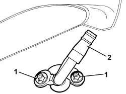

5050D08 HEADLAMP WASHER JET/S - R R
- Path
- Procedures > 50 AUXILIARY UNITS > 5050 SCREEN WASHERS AND HEADLAMP WASH/WIPE > 5050D HEADLAMP WASH/WIPE > 5050D08 HEADLAMP WASHER JET/S - R R
- Kind
- repair procedure (removal / refitting; the operation number is the code)
- Applies to
- engines: 1.3 JTD 16v; all production periods; only with equipment: SUV
- Interactive page
- https://sloeber94.github.io/elrnDB-fPnd/en/#/169002217
Applies to: engines: 1.3 JTD 16v; all production periods; only with equipment: SUV
 Removing
Removing
 Refitting
RefittingOp. 7055A65 FRONT LIGHT CLUSTER MOULDING.FRAME (ONE) LH OR RH R R
Applies to: engines: 1.3 JTD 16v; all production periods; only with equipment: SUV
1. Remove the retaining clips.
2. Remove the headlamp washer jet.

Applies to: engines: 1.3 JTD 16v; all production periods; only with equipment: SUV
Refitting
Removing1. Fit the headlamp washer jet in its seat.
2. Secure the headlamp washer jet with clips.
Applies to: engines: 1.3 JTD 16v; all production periods; only with equipment: SUV
Op. 7055A65 FRONT LIGHT CLUSTER MOULDING.FRAME (ONE) LH OR RH R R